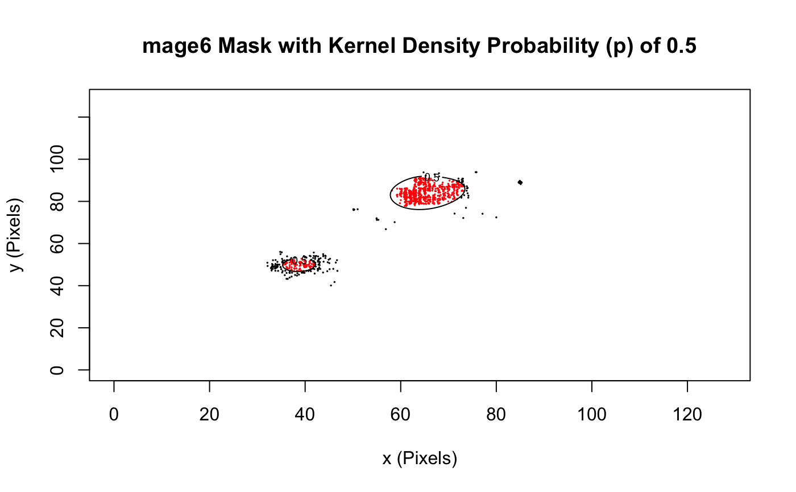

mask track lists and lists of track lists using kernel density clusters
densityMaskTracks(trackll, scale = 128, removeEdge = FALSE, separate = FALSE, buildModel = FALSE) plotLines(trackll, scale = 128) plotLinesTrackl(track.list, scale = 128) plotPoints(trackll, scale = 128) plotPointsTrackl(track.list, scale = 128)
| track.list | Track list |
|---|---|
| scale | X and Y scale (in pixels) of track video window |
| trackll | An uncensored/unfiltered list of track lists |
| removeEdge | Remove edge clusters with incomplete contour lines/ploygons |
| separate | Separate by cluster |
| buildModel | Manually configure the kernel density probability (p), while continuously building a model. T to create a model or improve an existing model. F to load in a MODEL.csv for automatic masking. |
masked trackll
This algorithm relies on one parameter, the kernel density probability (p), to mask track lists. Following, describes a method to optimize a workflow to predict p actively.
When densityMaskTracks() is called with buildModel = TRUE, it will repeatedly ask the user for the kernel density probability (p) and the number of smallest clusters to elimnate. The kernel density probability (p) is a factor that determines the cluster contours density. Low p creates smaller and/or fewer clusters and vice versa. Adjust p accordingly, but if there are still small extra clusters made in undesired areas, raise the number of smallest clusters to eliminate accordingly (note: sometimes noise clusters are too small to see). Manual input will get progressively easier after 3 data points as the model is continuously being improved and applied. Building the model will create a MODEL.csv in the working directory that can be used to mask automatically if buildModel = FALSE (this will look for one MODEL.csv in the working directory).
The separate parameter allows users to separate each track list from one video into their cluster components, creating a list of track lists. Applying this separate parameter to a list of track lists from multiple videos will simply append all the separated clusters together. Each track list is named "c#" as the header. The # indicating the cluster number.
The removeEdge parameter allwos users to automatically remove any clusters that are on edges and/or have an incomplete contour line (discontinuous polgon)
Use plotPoints and plotLines to plot lists of track lists into separate scatter/line plots. Use plotPointsTrackl and plotLinesTrackl for a single track list. These track lists can be plotted at any point in analysis.
EXTRA:
The general method for creating a masked track list from a single track list begins by first calculating its kernel density using kernelDensity(), creating the mask using this value createMask() (while adjusting the kernel density probability [p] as needed), then generating the masked track list using applyMask. The reason why these three steps are separated in the source code is to allow for quick repeated adjustments to the kernel density probability (p), as the other two steps can take more time.
The value for the kernel density probability (p) is automatically calculated by default using a regression model estimating the approximate desired probability using the track list's average track length (derived from a specific data set).Thus, it is highly recommended to use uncensored/unfiltered track lists.
If one had to apply this function to a large number of typically unvariable track lists, a regression model can be made and integrated into the source code.
when building initial masking model, MODEL.csv will be created in the working directory (this can be renamed as long as it ends with MODEL.csv). Each time the model is improved, the manual input will get progressively easier. The output will be a masked trackll that is created exactly as set during the program.
# create trackll track.folder=system.file("extdata","SWR1",package="sojourner") trackll <- createTrackll(folder=track.folder, input = 3)#> #> Reading ParticleTracker file: SWR1_WT_140mW_image6.csv ... #> #> mage6 read and processed. #> #> Process complete.# mask trackll using using default model (may not fit all data) trackll.masked=densityMaskTracks(trackll)#> #> Masking mage6 ... #> #> No initial model read. If desired, ensure there is one file ending in MODEL.csv in working directory.#> #> 2 clusters. mage6 masked at kernel density probability = 0.5 , eliminate = 0 #> #> Masked track list for mage6 created. #> #> All tracks lists masked.#> #> Processing SWR1_WT_140mW_image6.csv #> Output combined plot...#> #> Done!plotTrackOverlay(trackll.masked)#> #> Processing SWR1_WT_140mW_image6.csv #> Output combined plot...#> #> Done!# create trackll by build model manually, useful when default model does not # yield good masking either too strigent or too lose ###trackll.masked.md <- densityMaskTracks(trackll, buildModel = TRUE) # model building is recommended for new dataset, currently one needs to # manually evaluate the goodness of the masking, and strength /lose it by # specifying p value when prompted by the command. # This is an example of masking model building process # Masking mage6 ... # No initial model read. If desired, ensure there is one file ending in # MODEL.csv in working directory. # 2 clusters. mage6 masked at kernel density probability = 0.5, # eliminate = 0 # Done (1 = YES; 0 = NO)?: 0 # assume too strigent answer no. # New kernel density probability (p): 0.6 # assume too strigent, # losen it to 0.6 # Number of smallest clusters to elimnate (recommended 0, # unless last resort): 0 as recommended # 2 clusters. mage6 masked at kernel density probability = 0.6, # eliminate = 0 # Done (1 = YES; 0 = NO)?: 1 # yes. # New MODEL.csv created. # Masked track list for mage6 created. # All tracks lists masked. # compare results ###plotTrackOverlay(trackll) # original ###plotTrackOverlay(trackll.masked) # masked using default masking model ###plotTrackOverlay(trackll.masked.md) # masked using losened up masking # model # now one can used this modified Model.csv to process data that was not # masked well using default model by simply putting Model.csv in the working # directory and set buildModel=FALSE ###trackll.masked2 <- densityMaskTracks(trackll, buildModel = FALSE) ###plotTrackOverlay(trackll.masked.md) # masked by building new (lossen up) # model ###plotTrackOverlay(trackll.masked2) # masked using provided (lossen up) # model without building it